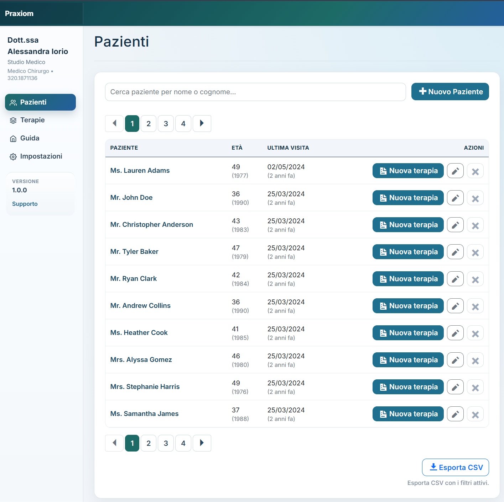
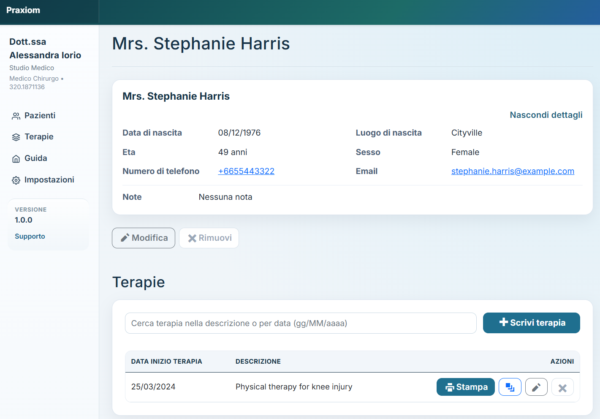
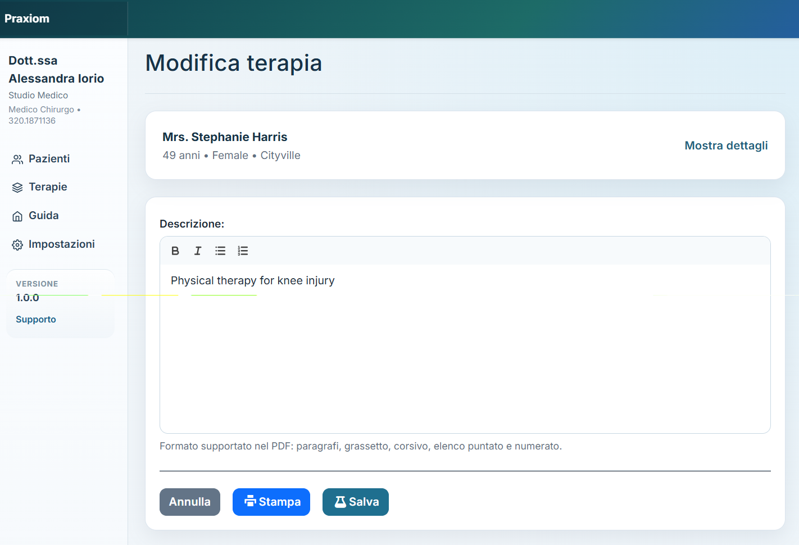
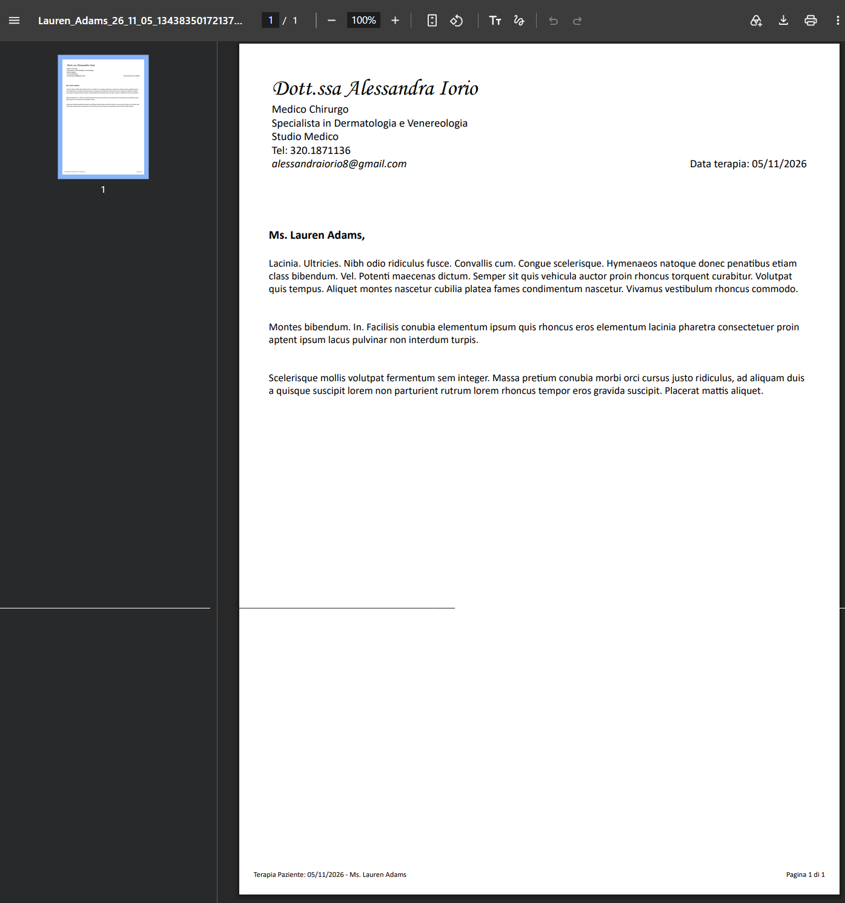
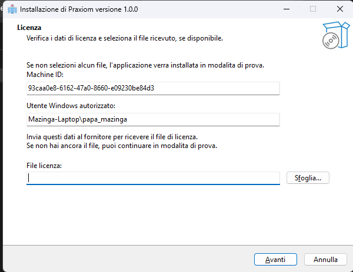
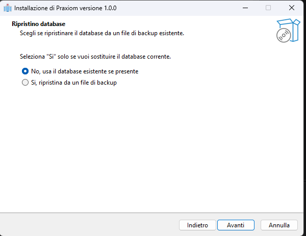
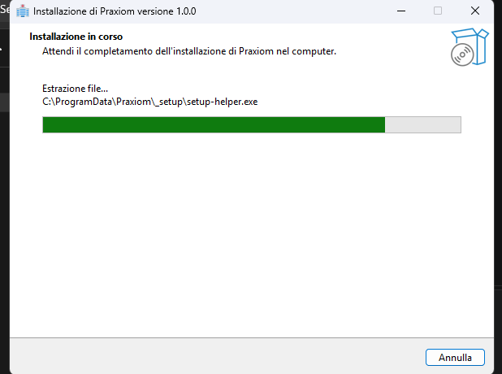
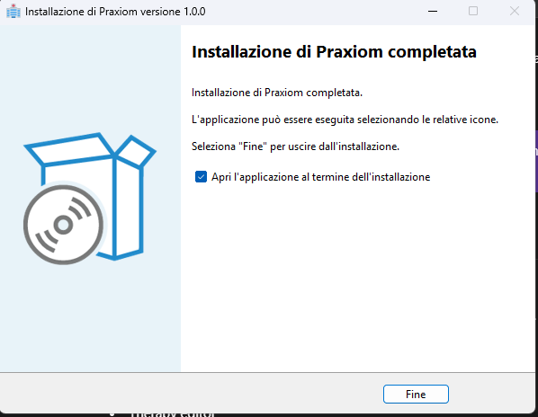
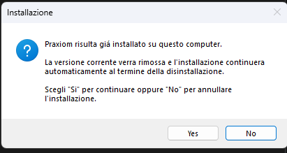
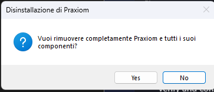

01 — MODERNISE
Modernise without starting over
Introduce MVC alongside Web Forms, add new APIs in modern .NET, and manage compatibility between old and new application code.
Senior/Lead .NET Developer & Analyst specialising in enterprise applications, SQL troubleshooting and incremental legacy modernisation. Maintain what matters. Build what comes next.
Maintain the application. Introduce change incrementally.
Add functionality alongside the existing system.
Business applications carry years of valuable logic. My focus is understanding that foundation, maintaining it, and introducing modern components where they make practical sense.
Introduce MVC alongside Web Forms, add new APIs in modern .NET, and manage compatibility between old and new application code.
Develop new functionality, maintain existing applications and build internal portals with Blazor. Choose UI tools to fit the system and the team.
Investigate slow SQL Server queries and application data access, using Entity Framework or Dapper where appropriate.
A personal .NET project demonstrating application development, data access and document generation.
A Windows-first medical management application I developed using .NET 10, a Blazor Web App with Interactive Server rendering, Entity Framework Core and SQLite.
Patient and therapy management, reusable therapy templates and PDF generation, supported by local licensing, database backup and recovery, automated testing and installer-based deployment. A personal project demonstrating end-to-end technical ownership.
Application screenshots using fictional sample data; screens may reflect an earlier version. Select an image to enlarge it.










Maintaining business-critical applications while introducing new capabilities incrementally, with attention to reliability and maintainability.
Enterprise application development and maintenance across established .NET Framework systems and modern .NET functionality.
Employment experience, separate from independent project work. This portfolio is personal and is not endorsed by Utmost.
A consistent feedback journey across Web Forms and MVC.
A third-party customer feedback platform needed to work across ASP.NET Web Forms and MVC 5, preserving existing functionality, security requirements and compatibility.
Enabled a consistent journey across both architectures through shared C# functionality. Separating integration logic from presentation supported maintainability and preserved platform compatibility.
Delivered incrementally, retaining Web Forms and the existing framework version.
Anonymised example from professional employment.
I independently migrated application-level email integration from SMTP to Microsoft Graph.
Legacy SMTP email functionality needed to move to Microsoft 365 through Microsoft Graph, preserving compatibility across applications, shared components and background services while minimising changes for consuming applications.
Replaced SMTP in the relevant components while preserving established workflows. The shared library centralised Microsoft Graph email functionality for the API and background service.
My ownership covered the application-level implementation across these connected components.
Anonymised example from professional employment.
I'm Stefano Magistri, a Senior/Lead .NET Developer & Analyst based in the London area. I work across application development, maintenance and the gradual modernisation of established business systems.
I focus on practical engineering: understanding existing behaviour, keeping code maintainable, investigating SQL performance and adding modern functionality without unnecessary full-system rewrites.
Currently undertaking an AI Core apprenticeship to develop practical knowledge of artificial intelligence, AI-assisted workflows and their potential application to enterprise software development.
Discuss a legacy .NET application, new functionality or a SQL performance issue.
Email about a project ↗Opens Gmail · Open email app instead
Discuss a .NET development role combining technical delivery, analysis and modernisation.
Email about a role ↗Opens Gmail · Open email app instead
stefanomagistri@gmail.com · LinkedIn ↗ · GitHub ↗